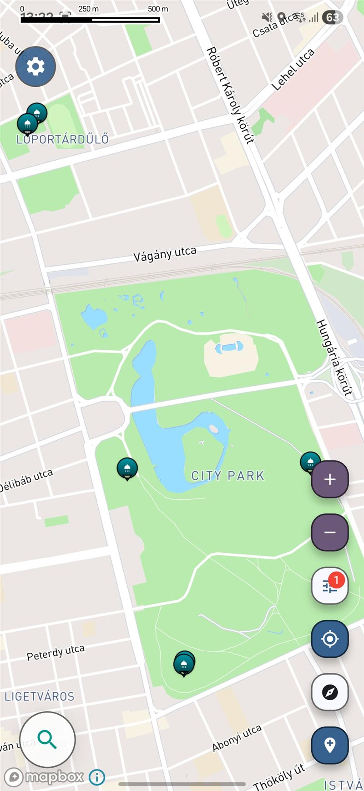

यात्रा उपयोगिता मानचित्र
यात्रा के दौरान निःशुल्क शॉवर खोजें
शॉवर की जानकारी फ़ोरम, यात्रा ब्लॉग और अधूरी सूचियों में बिखरी होती है — इसलिए सफ़र में तरोताज़ा रहना उम्मीद से कहीं मुश्किल हो जाता है।
निःशुल्क · iOS और Android
4.9 1,000+ डाउनलोड App Store & Google Play

आप केवल एक सीमित पूर्वावलोकन देख रहे हैं
सफ़र में शॉवर ढूँढना इतना मुश्किल क्यों है
- यात्रियों के लिए निःशुल्क शॉवर कैंपसाइट, सार्वजनिक सुविधाओं, समुद्र तटों और सामुदायिक स्थानों में बिखरे होते हैं, इसलिए उन्हें जल्दी खोजना मुश्किल है।
- बैकपैकर्स, वैन यात्री, साइकिल चालक और रोड ट्रिप करने वाले एक स्पष्ट खोज स्रोत के बजाय बिखरी हुई सलाह पर निर्भर रहते हैं।
- लंबे यात्रा-दिन की योजना बनाते समय अधिकांश बड़े मैप ऐप व्यावहारिक स्वच्छता सुविधाओं को प्राथमिकता नहीं देते।
यात्रा के दिनों के लिए व्यावहारिक शॉवर खोज
यह ऐप यात्रियों की वास्तविक ज़रूरतों के लिए चुने गए स्थान दिखाता है, जिससे सामान्य खोज परिणामों में अक्सर गायब रहने वाली उपयोगी जगहें आसानी से मिलती हैं।
सामान्य स्थानों की लंबी सूची के बजाय यात्रा में काम आने वाले चुने हुए शॉवर स्थान।
वैन लाइफ़, बैकपैकिंग, लंबी दूरी की ड्राइविंग और अन्य मोबाइल यात्रा दिनचर्या के लिए उपयोगी।
यात्रा के दौरान खुद को तरोताज़ा करने के लिए उन स्थानों को उजागर करता है जो अधिकांश मानचित्रों पर स्पष्ट रूप से नहीं दिखते।
आस-पास और स्थान खोजें
अपने मार्ग के पास और अधिक शॉवर स्थान खोजने के लिए ऐप खोलें।
रोड ट्रिप, बैकपैकिंग और वैन में सफ़र के लिए निःशुल्क शॉवर का नक्शा
यात्रा में निःशुल्क शॉवर की तलाश आम तौर पर तब शुरू होती है जब आराम कोई अतिरिक्त सुविधा नहीं, बल्कि वास्तविक ज़रूरत बन जाता है। लंबी रोड ट्रिप, कई दिनों की शहर यात्रा, बैकपैकिंग, साइकिल सफ़र या वैन लाइफ़ में शॉवर की व्यवस्था करना उम्मीद से कहीं कठिन हो सकता है। उपयोगी स्थान पास हो सकते हैं, लेकिन जानकारी अक्सर सामुदायिक पोस्ट, स्थानीय सुझाव, समुद्र तट संबंधी जानकारी या अलग-अलग सुविधा सूचियों में बिखरी होती है।
निःशुल्क शॉवर का बेहतर नक्शा आस-पास के व्यावहारिक विकल्प आसानी से दिखाकर यह परेशानी घटाता है। व्यापक मैप खोज पर निर्भर रहने के बजाय यात्री सीधे उपयोगी शॉवर स्थान तलाश सकते हैं। यात्रा के दो हिस्सों के बीच तरोताज़ा होना हो, लंबी ड्राइव में पड़ाव तय करना हो या सफ़र में रोज़मर्रा की दिनचर्या बनाए रखनी हो, यात्रा-केंद्रित शॉवर नक्शा खोज को अधिक उपयोगी बनाता है। यही वास्तविक सफ़र और यात्रियों की दैनिक ज़रूरतों के अनुसार व्यवस्थित निःशुल्क शॉवर जानकारी का लाभ है।